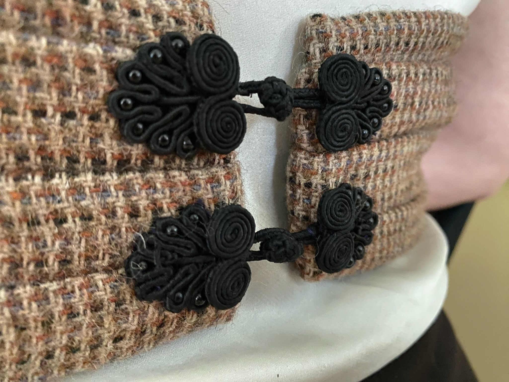
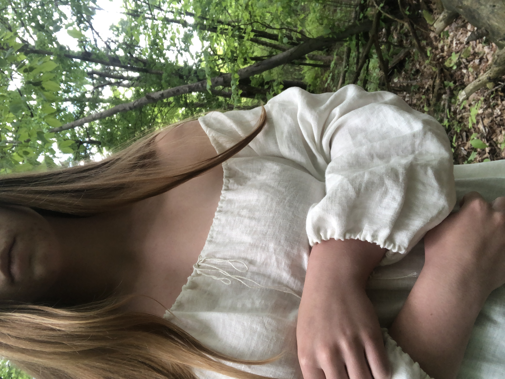

Mending
Creating something new is exciting, but maintaining something you love is better. When a piece it built to last and the owner shows it love, it can last a lifetime. Each stitch of repair or personalising adjustment adds an emotion value you can’t buy at target.
These fixes don’t take long. They can be hidden or a feature. They are a sign of love.
But sometimes it’s not about fixing, it’s about customizing. A little tailoring or needed decoration.
This corporate bag, gifted to me at an event hosted by Capital One Cafe, made me sad in capitalism. Rather than toss it away (or donating it, which will likely leave it in landfill anyways), it’s become a project. The logo has been covered, it’s been monogramed, it’s been fished and the next planned addition is a sheep pocket.


